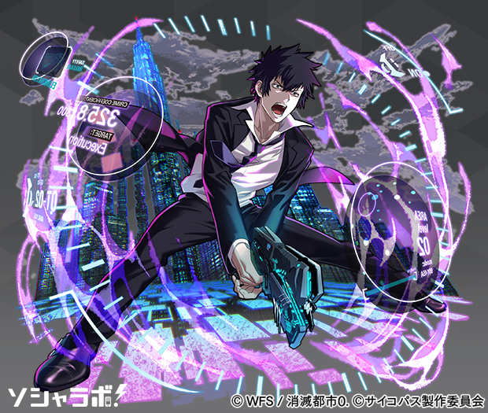
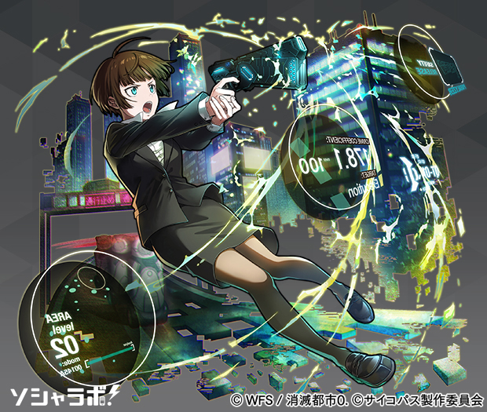
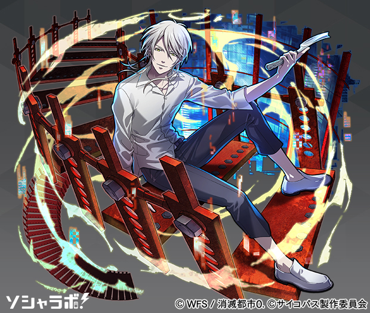
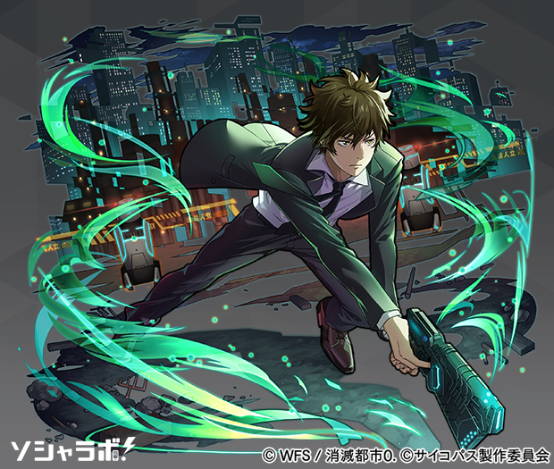
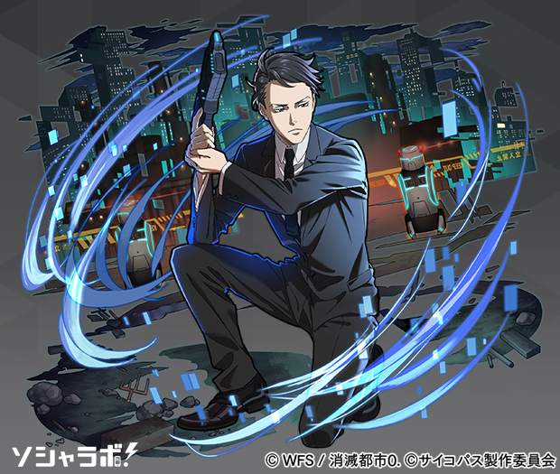
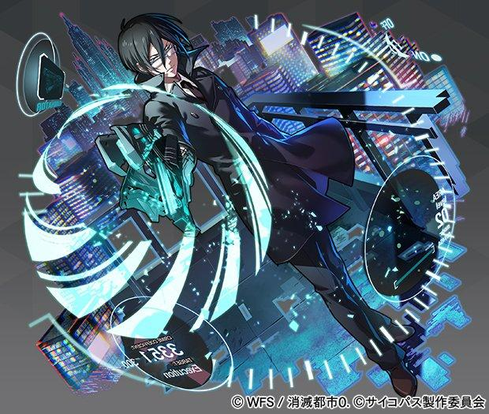

Psycho-Pass (サイコパス) es una serie de anime ambientada en un futuro Japón distópico, donde es posible medir de forma instantánea el estado mental de una persona y la probabilidad de que vaya a cometer delitos. Esto es gracias a un escáner psico-somático llamado Psycho-Pass, al que le es asociado un número y un color, que determina si se trata de un ciudadano común y corriente o un posible criminal.
Sinners of the System
Psycho-Pass SS, es una trilogía de películas de anime basadas en los personajes que aparecen en la serie de televisión Psycho-Pass. Cada película cuenta un caso diferente y esta protagonizada por distintos personajes.
¡Descubre todo sobre la nueva triología de esta saga!
TEMPORADASOpenings
Sinners of the System
Psycho-Pass SS, es una trilogía de películas de anime basadas en los personajes que aparecen en la serie de televisión Psycho-Pass. Cada película cuenta un caso diferente y esta protagonizada por distintos personajes.
¡Descubre todo sobre la nueva triología de esta saga!
PELÍCULASPersonajes
Shinya Kogami
Ejecutor - Es un detective altamente calificado. Su capacidad para resolver los casos lo hace un integrante valioso para la oficina y para la primera división. Anteriormente fue un inspector.
Akane Tsunemori
Inspectora - Recientemente asignada a la Unidad 1. Es una ciudadana ejemplar, con un psycho-pass increíblemente claro. Se niega a tratar a los ejecutores de una forma especial ya que les considera compañeros.
Makishima Shogo
Criminal Asintomático - Es la mente detrás de muchos de los casos que la Oficina de Seguridad Pública está investigando, incluyendo el que llevó a degradar a Shinya de inspector a ejecutor.
Arata Shindo
Inspector Asintomático - Es un inspector relativamente joven y novato de la Oficina de Seguridad Pública. Es tranquilo, cordial y amable, atributos que vienen derivados de su empatía hacia el resto de individuos.
Kei Mikhail Ignatov
Inspector - Compañero de Arata. Es fuerte, muy amable y autodisciplinado y estricto cuando se trata de su trabajo. Tiene un sentido de la justicia muy agudo, lo que le impulsa a actuar de forma precipitada ocasionalmente.
Nobuchika Ginoza
Inspector - Veterano inspector y antiguo compañero de Shinya, del que sigue siendo amigo aún después de la degradación de este. Inteligente y frío, es un férreo creyente del sistema Sybil.
Mangas y Novelas
PSYCHO-PASS Zero:
Namae no nai Kaibutsu
| CARACTERÍSTICAS | |
|---|---|
| TIPO: | Novela Ligera |
| VOLUMENES: | 1 |
PSYCHO-PASS:
Kanshikan Kougami Shinya
| CARACTERÍSTICAS | |
|---|---|
| TIPO: | Manga |
| TOMOS: | 6 |
PSYCHO-PASS:
Asylum
| CARACTERÍSTICAS | |
|---|---|
| TIPO: | Novela Ligera |
| VOLUMENES: | 2 |
PSYCHO-PASS:
Kanshikan Tsunemori Akane
| CARACTERÍSTICAS | |
|---|---|
| TIPO: | Manga |
| TOMOS: | 6 |
PSYCHO-PASS LEGEND:
Tsuisekisha Kagari Shuusei
| CARACTERÍSTICAS | |
|---|---|
| TIPO: | Novela Ligera |
| VOLUMENES: | 1 |
PSYCHO-PASS:
Season 02
| CARACTERÍSTICAS | |
|---|---|
| TIPO: | Manga |
| TOMOS: | 5 |